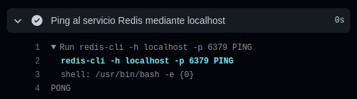

Servicios
La utilización de motores de bases de datos o servicios webs disponibles en imágenes de Docker es de vital importancia en toda plataforma CI/CD. GitHub Actions tiene la capacidad de crear contenedores de Docker que pueden proporcionar componentes necesarios, por ejemplo, en las pruebas automatizadas de integración o de sistema.
Al finalizar, sabrá:
-
Qué es un servicio en GitHub Actions.
-
Cómo se definen los servicios.
-
Cómo crear servicios para MongoDB, PostgreSQL y Redis.
Introducción
En GitHub Actions, un servicio (service) proporciona una aplicación en un contenedor Docker, accesible durante la ejecución del trabajo en el que se define. Por lo general, se utilizan para desplegar componentes necesarios como, por ejemplo, bases de datos o cachés, en las pruebas de integración automatizadas. Se crean automáticamente al comenzar la ejecución del trabajo y se destruyen también automáticamente al finalizar su ejecución.
Los servicios se definen mediante la propiedad services de los trabajos. En ella, indicaremos los servicios que debe crear GitHub Actions y toda la configuración necesaria como, por ejemplo, la imagen de Docker que proporciona el servicio y la exposición de puertos. Veamos un ejemplo ilustrativo que nos sirva de punto de partida, con el que se arrancarán dos contenedores, uno con Redis y otro con PostgreSQL:
services:
redis:
image: redis
ports:
- 6379:6379
postgresql:
image: postgres
env:
POSTGRES_PASSWORD: postgres
ports:
- 5432:5432
Propiedad services de los trabajos
Los contenedores de servicios que debe crear GitHub Actions se definen mediante la propiedad, de tipo objeto, services del trabajo que los usará. Cada propiedad, del valor de services, representa un servicio. El valor de la propiedad servicio debe ser un objeto y contiene su configuración. Entre sus propiedades más utilizadas, encontramos:
| Propiedad | Descripción |
|---|---|
| image | Imagen de Docker a utilizar para crear el contenedor como, por ejemplo, mongo, postgres o redis. |
| credentials | Credenciales necesitadas por GitHub Actions para acceder al registro que contiene la imagen. |
| env | Variables de entorno a usar en el contenedor. |
| ports | Exposición de puertos del contenedor. |
| options | Opciones de docker a usar. |
Para acceder a un servicio, indicaremos localhost como nombre. Esto es fácil de ver mediante el siguiente flujo de trabajo de ejemplo:
name: Prueba de servicios
on: workflow_dispatch
jobs:
prueba:
name: Probando el acceso a los servicios
runs-on: ubuntu-latest
services:
redis:
image: redis
ports:
- 6379:6379
options: >-
--health-cmd "redis-cli ping"
--health-interval 10s
--health-timeout 5s
--health-retries 5
steps:
- name: Instalación de redis-cli
run: sudo apt install redis-tools
- name: Ping al servicio Redis mediante localhost
run: redis-cli -h localhost -p ${{ job.services.redis.ports['6379'] }} PING
El comando PING solicita al motor de Redis que devuelva PONG para, así, comprobar que tenemos acceso a él. Esto es fácil de comprobar en el resumen de ejecución del flujo:

Propiedad services del contexto job
Recordemos que GitHub Actions proporciona el contexto job para acceder a datos del trabajo en curso. Este contexto contiene una propiedad services con la información de los servicios que tiene disponibles. A su vez, cada servicio dispone de una propiedad cuyo nombre es el nombre del servicio indicado en el trabajo y cuyo valor es un objeto que contiene las siguientes propiedades:
| Propiedad | Descripción |
|---|---|
| id | Identificador del contenedor en el que se está ejecutando el servicio. |
| network | Identificador de la red del contenedor. |
| ports | Puertos expuestos por el servicio. |
La propiedad ports es de tipo objeto y contiene una propiedad para cada puerto expuesto donde su valor es el puerto en el que se expone.
Por ejemplo, si el puerto expuesto es 8080, pero se expone en el 80, tendremos que acceder al 80.
La mejor manera de hacerlo sería mediante una expresión como ${{ job.services.web.ports['8080'] }};
así, si cambiamos la exposición, no tendremos que modificar nada en ningún paso.
Servicio Redis
Para crear un servicio Redis, podemos utilizar la imagen redis como muestra el siguiente ejemplo:
services:
redis:
image: redis
ports:
- 6379:6379
options: >-
--health-cmd "redis-cli ping"
--health-interval 10s
--health-timeout 5s
--health-retries 5
Si necesita Redis con el módulo RedisJSON cargado, puede utilizar la imagen redislabs/rejson, en vez de redis.
Servicio PostgreSQL
Para crear una instancia de PostgreSQL, usaremos:
services:
postgresql:
image: postgres
env:
POSTGRES_PASSWORD: postgres
options: >-
--health-cmd pg_isready
--health-interval 10s
--health-timeout 5s
--health-retries 5
Entre las variables de entorno que podemos configurar, recordemos, tenemos POSTGRES_USER, POSTGRES_PASSWORD y POSTGRES_DB. La lista completa se encuentra disponible en la imagen de Docker, [https://hub.docker.com//postgres](https://hub.docker.com//postgres).
Veamos un flujo de trabajo de prueba:
name: PostgreSQL
on: workflow_dispatch
jobs:
ping:
name: Probando PostgreSQL
runs-on: ubuntu-latest
services:
pg:
image: postgres
ports:
- 5432:5432
env:
POSTGRES_PASSWORD: contraseña
options: >-
--health-cmd pg_isready
--health-interval 10s
--health-timeout 5s
--health-retries 5
steps:
- name: Instalación de pg_isready
run: sudo apt install postgresql-client
- name: Ping a PostgreSQL
run: pg_isready -h localhost -p ${{ job.services.pg.ports['5432'] }}
Servicio MongoDB
Otro servicio muy utilizado hoy en día es MongoDB, el cual podemos crear mediante la imagen mongo:
name: MongoDB
on: workflow_dispatch
jobs:
ping:
name: Probando MongoDB
runs-on: ubuntu-latest
services:
mongo:
image: mongo
ports:
- 27017:27017
env:
MONGO_INITDB_ROOT_USERNAME: root
MONGO_INITDB_ROOT_PASSWORD: contraseña
steps:
- name: Instalación del shell de MongoDB
run: sudo apt install mongodb-org-shell
- name: Ping a MongoDB
run: |
cs=mongodb://localhost:${{ job.services.mongo.ports['27017'] }}
mongo --host $cs --eval 'db.runCommand({ping: 1})'
Para la lista completa de las posibles variables de entorno utilizables, eche un vistazo a [https://hub.docker.com//mongo](https://hub.docker.com//mongo).